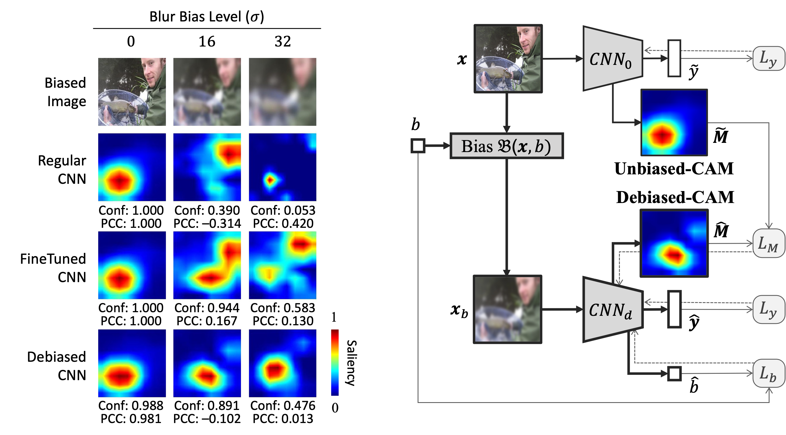

Wencan Zhang
Contact
Hi! I am a Ph.D. candidate at the department of computer science, National University of Singapore. Now I am a member of the NUS UbiComp Lab under Prof. Brian Lim’s supervision.
My research aims at improving the interpretability of complex machine learning models by considering human factors. The broader research interests include explainable artificial intelligence, data privacy, robust machine learning.
For more details about me and my research, please check out my CV.
Research
Publications
|
Towards Relatable Explainable AI with the Perceptual Process Wencan Zhang, Brian Y. Lim Conference on Human Factors in Computing Systems (CHI), 2022. pdf demo |
|
|  |
Debiased-CAM to mitigate image perturbations with faithful visual explanations of machine learning Wencan Zhang, Mariella Dimiccoli, Brian Y. Lim Conference on Human Factors in Computing Systems (CHI), 2022. |
|
Exploiting Explanations for Model Inversion Attacks Zhao, Xuejun, Wencan Zhang, Xiaokui Xiao, and Brian Lim. International Conference on Computer Vision (ICCV), 2021. |
|
|
Show or Suppress? Managing Input Uncertainty in Machine Learning Model Explanations Danding Wang, Wencan Zhang, Brian Y. Lim Artificial Intelligence, 2021. |
Teaching
Phenomena and Theories of Human-Computer Interaction
Teaching Assistant
National University of Singapore, 2019-2022.
Software Engineering Project
Teaching Assistant
National University of Singapore, 2019.